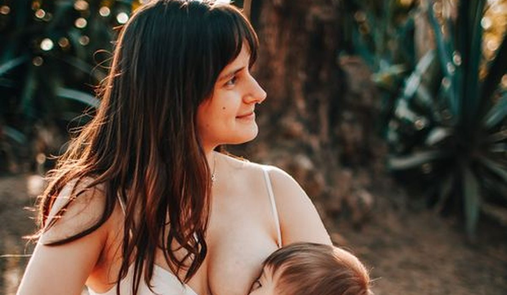

En bref
La meilleure marque de vêtements de grossesse en 2026 est Kiabi avec 7,9/10, pour un vestiaire complet à 139 € et des bandeaux jugés confortables jusqu'au neuvième mois dans les avis clients. H&M Mama suit (7,6/10) avec la gamme la plus complète, du jean à la lingerie d'allaitement. Primark est la moins chère à 98 €, mais concentre les avis négatifs sur le lavage.
- Un vestiaire de grossesse complet va de 98 € chez Primark à 340 € chez Envie de Fraise
- Le jean est la première pièce achetée, entre le 4e et le 5e mois dans la majorité des avis
- Les bandeaux hauts intégraux sont préférés aux bandeaux bas dans trois avis sur quatre
- Six marques du panel proposent des pièces utilisables après la grossesse, ce qui change le coût réel
Sommaire de ce comparatif
Le classement des marques de vêtements de grossesse
Sur cet univers, nous ajoutons un critère aux cinq habituels, le confort, établi à partir des avis clients qui décrivent le port du troisième au neuvième mois. Un vestiaire de grossesse se porte six mois et se garde rarement, le prix et le confort dominent donc la note.
01 Le meilleur rapport qualité-prix139 € le vestiaire complet7,9/10
Le meilleur rapport qualité-prix139 € le vestiaire complet7,9/10
Le meilleur rapport qualité-prix139 € le vestiaire complet7,9/1002 La gamme la plus complèteDu jean à l'allaitement7,6/10
La gamme la plus complèteDu jean à l'allaitement7,6/10
La gamme la plus complèteDu jean à l'allaitement7,6/1003 Le moins cher98 €, tenue plus limitée6,3/10
Le moins cher98 €, tenue plus limitée6,3/10
Le moins cher98 €, tenue plus limitée6,3/10Kiabi arrive en tête avec un vestiaire complet à 139 €, soit 40 € de moins que H&M Mama pour des avis équivalents sur le confort des bandeaux. H&M Mama reste devant sur la largeur de gamme, c'est la seule marque du panel à couvrir le jean, la robe, le manteau et la lingerie d'allaitement au même endroit.
Le tableau comparatif des 10 marques
Chaque vestiaire comprend les mêmes douze pièces, chiffrées au prix catalogue. Le confort du bandeau est établi à partir des avis clients, en distinguant ceux qui portent au cinquième, au septième et au neuvième mois.
| Marque | Note /10 | Vestiaire complet | Jean | Confort (avis) | Le point fort |
|---|---|---|---|---|---|
| KiabiNotre choix | 7,9 | 139 € | 22,99 € | Très bon | Le rapport qualité-prix |
| H&M Mama | 7,6 | 178 € | 29,99 € | Très bon | La gamme complète |
| Vertbaudet | 7,3 | 212 € | 39,99 € | Bon | Les matières |
| Envie de Fraise | 7,1 | 340 € | 59,00 € | Excellent | Les coupes |
| Zara | 6,8 | 224 € | 45,95 € | Moyen | Le style |
| C&A | 6,6 | 156 € | 24,99 € | Bon | Les basiques |
| Primark | 6,3 | 98 € | 17,00 € | Moyen | Le prix |
| Shein Maternity | 6,1 | 112 € | 14,00 € | Variable | Le choix en ligne |
Vestiaire de 12 pièces, deux jeans, quatre hauts, deux robes, un manteau, deux lots de lingerie et un legging. Prix catalogue hors soldes relevés en septembre 2026.
L'écart de prix entre Primark et Envie de Fraise atteint un facteur 3,5. Mais 28 % des avis Primark mentionnent une pièce remplacée en cours de grossesse, contre 7 % chez Kiabi et H&M Mama, ce qui réduit l'écart réel.
Quel jean de grossesse choisir
C'est la pièce la plus achetée et la plus critiquée. Trois systèmes coexistent, le bandeau bas sous le ventre, le bandeau haut intégral et le pantalon à ceinture élastique réglable.
- Le bandeau haut intégral est préféré dans trois avis sur quatre au-delà du septième mois, il ne roule pas
- Le bandeau bas convient jusqu'au sixième mois puis glisse en position assise
- La ceinture réglable est la plus économique mais la moins confortable sur la durée
- Kiabi et H&M Mama proposent les deux systèmes, ce qui permet de changer en cours de grossesse
Le jean de grossesse s'achète en général entre le quatrième et le cinquième mois, avant les hauts. C'est la pièce sur laquelle il vaut mieux ne pas économiser, elle se porte tous les jours pendant cinq mois.
Combien coûte une grossesse habillée
Nous avons détaillé le vestiaire par poste chez les quatre marques les plus accessibles du panel, au prix catalogue, pour voir où part réellement le budget.
| Poste | Kiabi | H&M Mama | C&A | Primark |
|---|---|---|---|---|
| Deux jeans | 46 € | 60 € | 50 € | 34 € |
| Quatre hauts | 36 € | 48 € | 40 € | 24 € |
| Deux robes | 30 € | 40 € | 32 € | 20 € |
| Manteau | 19 € | 24 € | 22 € | 14 € |
| Lingerie et legging | 8 € | 6 € | 12 € | 6 € |
Vestiaire de 12 pièces, prix catalogue hors soldes relevés en septembre 2026.

Le jean représente à lui seul un tiers du budget chez toutes les marques du panel. C'est donc le poste sur lequel arbitrer, en achetant un jean de qualité et en complétant les hauts chez la marque la moins chère.
Faut-il prendre sa taille habituelle
Dans la majorité des cas oui, les coupes de grossesse sont conçues pour évoluer. Les grilles officielles montrent toutefois deux exceptions dans le panel.
- Kiabi, H&M Mama et Vertbaudet se prennent dans la taille habituelle d'avant grossesse
- Zara et Shein Maternity demandent une taille au-dessus, les coupes restent ajustées
- Les hauts d'allaitement se prennent dans la taille habituelle chez toutes les marques du panel
Notre verdict
Kiabi remporte notre comparatif grossesse 2026 avec 7,9/10, pour un vestiaire complet à 139 € et des bandeaux que les avis décrivent comme tenant jusqu'au neuvième mois sans rouler.
Si vous voulez tout trouver au même endroit, y compris la lingerie d'allaitement, H&M Mama justifie ses 40 € de plus. Si le budget est serré, Primark à 98 € reste possible, en sachant que les avis signalent souvent une ou deux pièces à remplacer.
Questions fréquentes
Quelle est la meilleure marque de vêtements de grossesse en 2026 ?
Kiabi obtient la meilleure note de notre comparatif avec 7,9/10, pour un vestiaire complet à 139 € et des avis solides sur le confort des bandeaux jusqu'au neuvième mois. H&M Mama suit à 7,6/10 avec la gamme la plus complète.
Combien coûte un vestiaire de grossesse complet ?
De 98 € chez Primark à 340 € chez Envie de Fraise pour douze pièces. Kiabi se situe à 139 € et H&M Mama à 178 €. Le jean représente environ un tiers du budget quelle que soit la marque.
Faut-il prendre une taille au-dessus en vêtements de grossesse ?
Chez Kiabi, H&M Mama et Vertbaudet, la grille officielle part de la taille habituelle d'avant grossesse, les coupes étant prévues pour évoluer. Chez Zara et Shein Maternity, une taille au-dessus est plus sûre.
À partir de quel mois acheter des vêtements de grossesse ?
La majorité des avis situent l'achat du premier jean de grossesse entre le quatrième et le cinquième mois, puis les hauts un mois plus tard.
Quel type de bandeau choisir sur un jean de grossesse ?
Le bandeau haut intégral est préféré dans trois avis sur quatre au-delà du septième mois, parce qu'il ne roule pas en position assise. Le bandeau bas convient jusqu'au sixième mois.
Comment sont notées les marques de ce comparatif ?
Aux cinq critères habituels, prix, qualité, tailles, livraison et note globale, nous ajoutons le confort, établi à partir des avis clients au cinquième, au septième et au neuvième mois.
Notre méthode
Ce comparatif repose sur des données publiques, vérifiables une par une.
- Les prix sont relevés sur les sites officiels des marques, hors code promo et hors soldes
- Les écarts de taille proviennent des grilles officielles publiées par les marques, comparées entre elles
- La tenue au lavage est établie à partir des avis clients vérifiés qui mentionnent rétrécissement ou décoloration
- Les compositions et les grammages sont ceux affichés sur les fiches produit
- Aucune marque ne finance ce comparatif, ne nous rémunère ni ne le relit avant publication